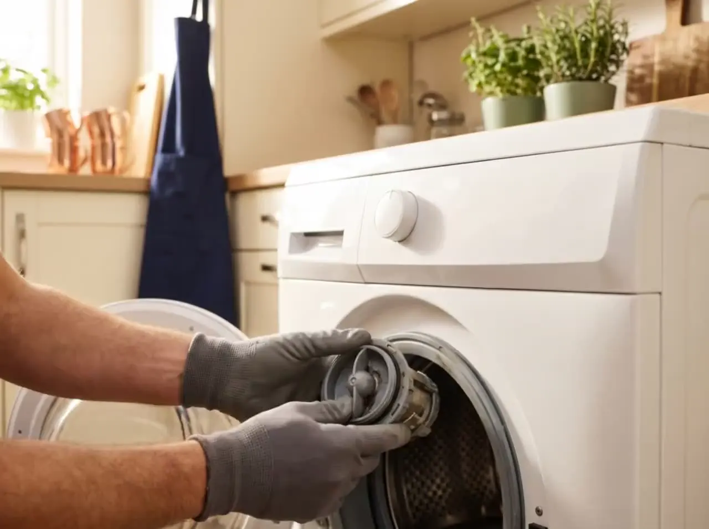
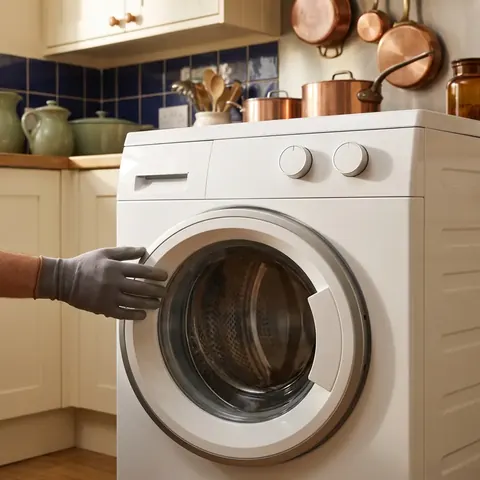

Servicio técnico Siemens en Valladolid
Reparación de electrodomésticos Siemens en Valladolid
Sabes lo que cuesta la visita antes de que llegue el técnico: 60,50 € IVA incl., descontados si reparas. iQ300, iQ500 o iQ700, con o sin Home Connect.
- 60,50 € IVA incl. · descontable si reparas
- 6 meses de garantía por escrito
- Te confirmamos la franja al llamar
¿Tu Siemens marca un código?
Verificados con la documentación de Siemens. Si no está aquí, escríbenoslo igual.
Elemento estrella
¿Tu Siemens marca un código?
Verificados con la documentación de Siemens. Si no está aquí, escríbenoslo igual.
Aparatos
¿Qué Siemens se te ha roto?
Lavado y secado

Lavadora
No desagua, no centrifuga, marca E18
desde 60,50 € la visita, descontable →
Secadora
No seca, depósito lleno sin estarlo, marca E06
desde 60,50 € la visita, descontable →
Lavasecadora
No desagua, no seca, marca E18
desde 60,50 € la visita, descontable →
Lavavajillas
Agua en la base, no seca, marca E15
desde 60,50 € la visita, descontable →Frío

Frigorífico
No enfría, hace escarcha con noFrost, alarma
desde 60,50 € la visita, descontable →
Congelador
No congela, hace escarcha, alarma sonora
desde 60,50 € la visita, descontable →Cocina


Sin sorpresas
60,50 € IVA incl., explicado
Qué incluye la visita
Desplazamiento a tu zona, diagnóstico y presupuesto por escrito
Cuándo se descuenta
Los 60,50 € se restan del total si decides reparar
Qué pasa si no compensa
Pagas solo la visita; no te cobramos por decirte la verdad
Qué pasa cuando llamas
La promesa es el proceso
No tenemos reseñas que enseñarte todavía: tenemos un proceso con horas y precio a la vista.
- 0 minLlamas o nos escribes.
- Al llamarTe confirmamos la franja y el precio.
- VisitaDiagnóstico, 60,50 € IVA incl.
- PresupuestoPor escrito, en tu cocina. Decides tú.
- Factura + garantía6 meses, por escrito.
Honestidad
¿Compensa arreglarla o comprar otra?
- Si la reparación supera la mitad del precio de un aparato nuevo, te lo decimos.
- Si tu Siemens tiene más de 10 años, te lo decimos.
- Si es una avería de placa electrónica con piezas caras, te lo decimos en casa — y no te cobramos más que la visita.
¿Y cuánto vale uno nuevo?
Especialistas en Siemens
Series y tecnologías que reparamos
- iQ100 / iQ300 / iQ500 / iQ700de la gama de entrada a la premium; el diagnóstico es el mismo, la pieza cambia de precio. La serie viene en la etiqueta E-Nr.
- Plataforma BSHmisma fábrica y misma electrónica que el resto del grupo BSH: un E18 o un E15 se leen igual en toda la plataforma; lo que cambia es el nombre comercial.
- iSensoricsensores de carga, suciedad y humedad; cuando fallan no dan código propio, dan programas eternos o ropa mal aclarada.
- iQdrivemotor sin escobillas con 10 años de garantía del fabricante; si falla, casi siempre es el módulo inverter (E21/E57), no el motor.
- i-Dosdosificación automática de detergente; si no dosifica, revisamos el sensor de carga y las bombas dosificadoras, no el módulo.
- varioSpeed / varioSpeed Plusacorta el programa hasta un 65 %; no da código, pero enmascara un E18 lento como "programa que no acaba".
- aquaStopmanguera y sensor antifugas; si salta (E23 en lavadora, E15 en lavavajillas), el aviso es real: cierra el grifo.
- Home Connectla app avisa antes que el panel; ten a mano el código que muestra cuando llames.
- noFrost / hyperFreshsin escarcha y cajón a 0 °C; si el noFrost hace hielo, es el sensor o la resistencia de desescarche; hyperFresh falla en silencio, se nota en la comida.
- Zeolithsecado por zeolita en lavavajillas; si no seca y no marca E09, revisamos primero el contenedor de zeolita.
- activeCleanpirólisis del horno; la puerta se bloquea por seguridad (E6/E7) y no es avería hasta que no se desbloquea en frío.
- flexInduction / powerBoostzonas combinables; un U400 tras la instalación no es de la placa, es de la conexión de fases.
Dónde reparamos
Valladolid capital y alfoz
Toca tu zona
Valladolid y 20 km a la redonda
Cubrimos Valladolid capital, todos sus barrios y los municipios a menos de 20 km del centro: Laguna, Arroyo, La Cistérniga, Zaratán, Santovenia, Fuensaldaña, Renedo, Cabezón, Cigales, Mucientes, Villanubla, Simancas, Boecillo, Tudela, Viana, Aldeamayor, Traspinedo y Valdestillas. Fuera de ese radio no damos servicio.
Preguntas frecuentes
¿Sois el servicio oficial de Siemens?
¿Cuánto cuesta que vengáis?
¿Es verdad que Siemens y Bosch son lo mismo por dentro?
¿Reparáis calderas, calentadores o aire acondicionado Siemens?
¿Y si no compensa arreglarlo?
¿Cuándo venís?
Llámanos o escríbenos
Llama o escribe por WhatsApp
L–V 8:00–20:00 · S 9:00–14:00 · te confirmamos la franja al llamar
Fuera de horario, escríbenos por WhatsApp y te contestamos al abrir. Si tienes una foto de la etiqueta E-Nr o del error, mándala en el chat: llegamos con la pieza correcta.